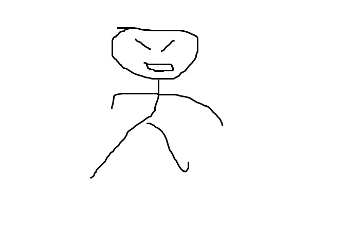

html 태그는 head 태그와 body 태그를 감싸는 가장 큰 태그
태그 설명 html
meta 태그의 속성으로 문자셋을 설정하여 한글 깨짐을 방지하자
title 태그는 html 문서 자체의 제목을 나타내
head 태그는 본문이 아니라 본문을 설명하는 태그와 정보들을 감싸기 위한 용도야
body 태그는 본문의 내용을 감싸기 위한 용도라구
h1 태그는 가장 중요한 제목
을 나타낸다
h2 태그는 h1 태그보다
덜 중요한 제목
을 나타내지
br 태그는 줄바꿈을 의미해
u 태그는 밑줄을 긋고 strong 태그는 내용을 강조함
p 태그는 문단을 나누는 역할을 한단다.
br 태그는 단순한 줄바꿈을 통해, p 태그는 문단의 나눔을 통해
줄의 구분을 표현해줘.
img 태그는 css 구조에서 src 속성을 이용하게 되지 img src="path"
또 width, height 속성을 이용하면 크기를 조정할 수도 있어
style 속성에서 상하 좌우의 margin 값을 조정해서 위치를 이동시키는 것도 잊지 말라구

물론 p 태그의 css구조를 이용하여 margin을 조종함으로써 문단 사이의 간격 거리를 조정할 수도 있지
heading 태그는 h6으로 갈 수록
중요도가 낮아지는 제목
을 의미한다구
- ol 태그는
- li 태그들을
- ordered로 감싸는 태그다
다른 문서로 이동 링크
↑ 이 링크처럼 a 태그를 이용하면 다른 자원(문서, 미디어 파일, 프로그램 등등 뭐든지)으로 이동할 수 있어